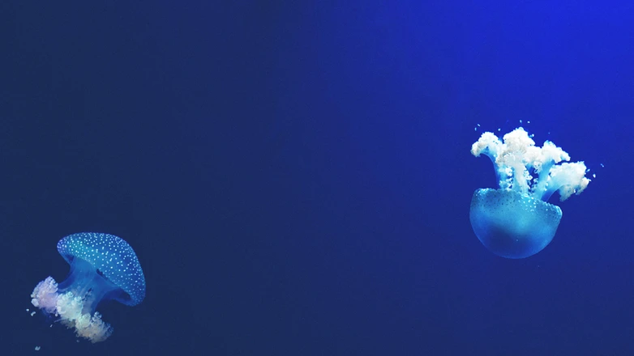
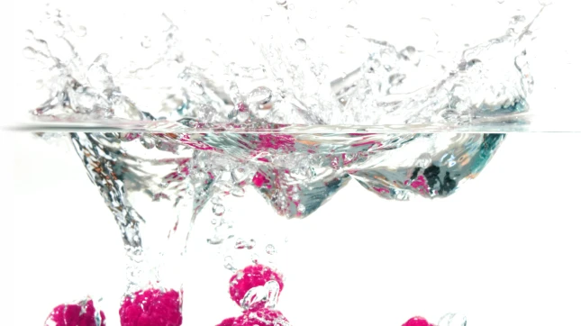
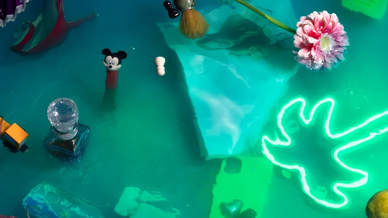

roshan bhardwaj
Uncovering the Impact: How Microplastics Affect Aquatic Life
Uncovering the Impact: How Microplastics Affect Aquatic Life
Image Description: This image depicts various aquatic organisms,
such as fish, turtles, and coral, surrounded by microplastic
particles
...
The microplastics are shown in different shapes and colors,
representing the variety of plastic debris found in water
bodies. The image highlights the negative impact of
microplastics on aquatic life, emphasizing the importance of
monitoring and addressing this issue. Microplastics have
become a significant concern for the health of our water
bodies and the organisms that inhabit them. These tiny plastic
particles, measuring less than 5mm in size, are found in
abundance in our oceans, rivers, and lakes. The image above
vividly portrays the detrimental effects of microplastics on
aquatic life and underscores the urgency of monitoring and
addressing this issue.

roshan bhardwaj
From Water to Table: The Public Health Risks of Microplastics
From Water to Table: The Public Health Risks of Microplastics
Have you ever stopped to think about what might be lurking in
your glass of water? While it may seem like a simple, refreshing
...
beverage, the truth is that our water sources are becoming
increasingly contaminated with microplastics - tiny particles
of plastic less than 5mm in size. These microplastics can come
from a variety of sources, including plastic bottles,
packaging, and even synthetic clothing. And when consumed,
they can pose potential health risks to humans. One of the
main concerns with microplastics is their ability to absorb
and accumulate toxic chemicals. As they float in our water
bodies, they can attract and absorb harmful pollutants such as
pesticides and heavy metals. When we consume these
microplastics, we are also ingesting these toxic chemicals,
which can have detrimental effects on our health.

roshan bhardwaj
The Hidden Dangers of Microplastics: What You Need to Know
The Hidden Dangers of Microplastics: What You Need to Know Image
Description: A close-up photo of a water sample containing
microplastics. The water appears murky, and there are small
particles
...
floating in it. The microplastics are various colors and
shapes, ranging from tiny fibers to small fragments. The photo
is taken from above, showing the surface of the water.
Microplastics have become a significant concern in recent
years due to their potential impact on aquatic life and public
health. These tiny particles, measuring less than 5mm in size,
are found in various forms, including fibers, fragments, and
microbeads. They are often invisible to the naked eye, making
their presence in our water bodies even more alarming.